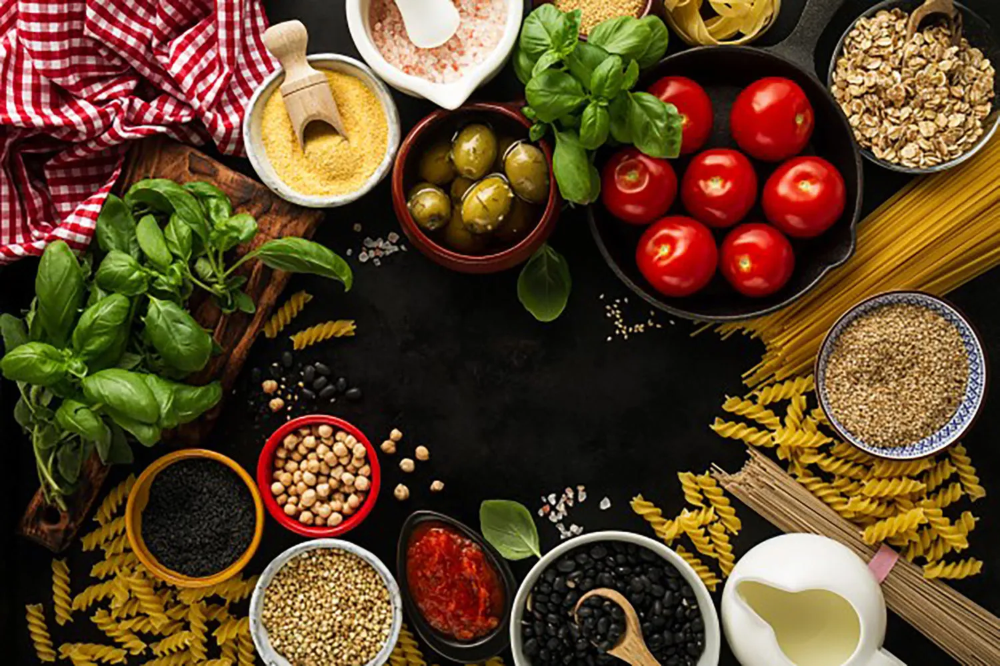

Italian cuisine has a great variety of different ingredients which are commonly used, ranging from fruits, vegetables, grains, cheeses, meats and fish. In northern Italy, fish (such as cod, or baccalà), potatoes, rice, corn (maize), sausages, pork, and different types of cheese are the most common ingredients
 Chicken parmesan Seafood Dessert